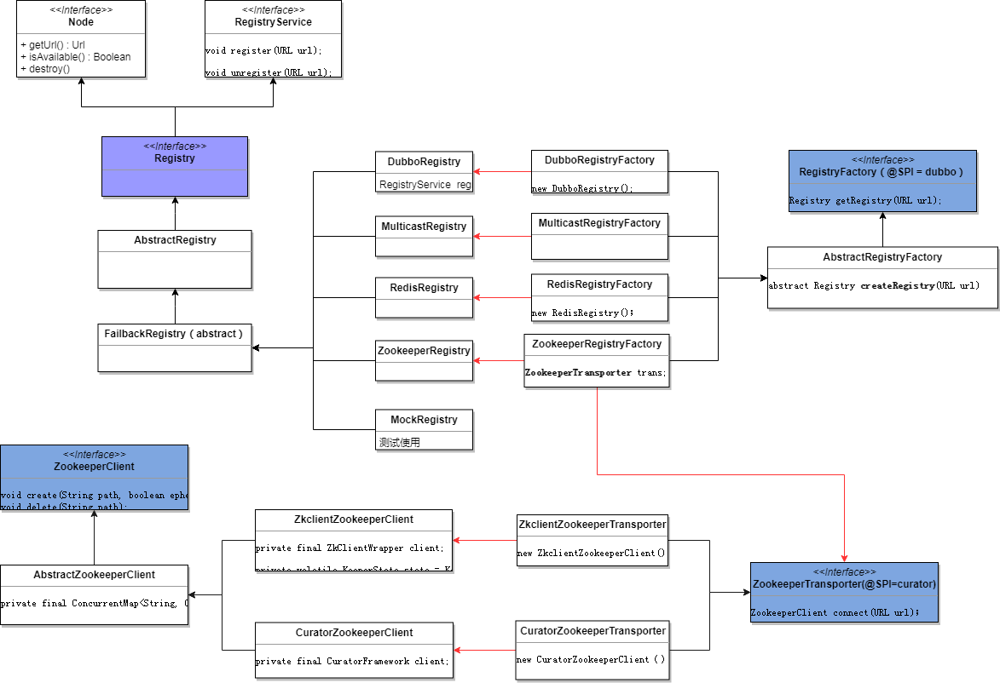

注册中心是Dubbo实现服务化管理的核心组件,类似于目录服务的作用,主要用来存储Dubbo发布的服务信息(譬如提供者url串、路由信息等),Dubbo框架支持zookeeper、redis、multicast等注册中心,下面我们就详细看下Dubbo的注册中心是如何实现的。
先来看下注册中心相关的类图

Registry接口
1 | public interface Registry extends Node, RegistryService { |
Node接口
1 | public interface Node { |
RegistryService接口
1 | public interface RegistryService { |
NotifyListener接口
监听器，监听服务的变更1
2
3
4
5
6
7
8
9
10
11
12
13public interface NotifyListener {
/**
* 当收到服务更改的通知时触发该方法
* 1、始终是在服务接口和数据类型的纬度上通知。也就是说，不会通知属于一个服务的部分相同类型的数据，用户无需比较先前通知的结果
* 2、订阅时的第一个通知必须是服务所有类型的完整通知
* 3、在变更时，允许单独通知不同类型的数据，例如：providers, consumers, routers, overrides,它只允许通知其中一种类型，
* 但此类型的数据必须是完整的，而不是增量的
* 4、如果数据类型为空，则需要通过url数据的类别参数标识空协议
* 5、notifications保证通知的顺序(即registry的实现),例如：单线程推送、队列序列化、版本比较
* @param urls 已注册的信息列表,非空,这意味着，它和RegistryService#lookup(URL)方法的返回值相同.
*/
void notify(List<URL> urls);
}
AbstractRegistry抽象类
1 | public abstract class AbstractRegistry implements Registry { |
FailbackRegistry抽象类
FailbackRegistry抽象类增加了失败重试功能，MulticastRegistry、ZookeeperRegistry等都继承自它.1
2
3
4
5
6
7
8
9
10
11
12
13
14
15
16
17
18
19
20
21
22
23
24
25
26
27
28
29
30
31
32
33
34
35
36
37
38
39
40
41
42
43
44
45
46
47
48
49
50
51
52
53
54
55
56
57
58
59
60
61
62
63
64
65
66
67
68
69
70
71
72
73
74
75
76
77
78
79
80
81
82
83
84
85
86
87
88
89
90
91
92
93
94
95
96
97
98
99
100
101
102
103
104
105
106
107
108
109
110
111
112
113
114
115
116
117
118
119
120
121
122
123
124
125
126
127
128
129
130
131
132
133
134
135
136
137
138
139
140
141
142
143
144
145
146
147
148
149
150
151
152
153
154
155
156
157
158
159
160
161
162
163
164
165
166
167
168
169
170
171
172
173
174
175
176
177
178
179
180
181
182
183
184
185
186
187
188
189
190
191
192
193
194
195
196
197
198
199
200
201
202
203
204
205
206
207
208
209
210
211
212
213
214
215
216
217
218
219
220
221
222
223
224
225
226
227
228
229
230
231
232
233
234
235
236
237
238
239
240
241
242
243
244
245
246
247
248
249
250
251
252
253
254
255
256
257
258
259
260
261
262
263
264
265
266
267
268
269
270
271
272
273
274
275
276
277
278
279
280
281
282
283
284
285
286
287
288
289
290
291
292
293
294
295
296
297
298
299
300
301
302
303
304
305
306
307
308
309
310
311
312
313
314
315
316
317
318
319
320
321
322
323
324
325
326
327
328
329
330
331
332
333
334
335
336
337
338
339
340
341
342
343
344
345
346
347
348
349
350
351
352
353
354
355
356
357
358
359
360
361
362
363
364
365
366
367
368
369
370
371
372
373
374
375
376
377
378
379
380
381
382
383
384
385
386
387
388
389
390
391
392
393
394
395
396
397
398
399
400
401
402
403
404
405
406
407
408
409
410
411
412
413
414
415
416
417
418
419
420
421
422
423
424
425
426
427
428
429
430
431
432
433
434
435
436
437
438
439
440
441
442
443
444
445
446
447
448
449
450
451
452
453
454
455
456
457
458
459
460
461
462
463
464
465
466
467
468
469
470
471
472
473
474
475
476
477
478
479
480
481
482
483
484
485
486
487
488
489
490
491
492
493
494
495
496
497
498
499
500
501
502
503
504
505
506
507
508
509
510
511public abstract class FailbackRegistry extends AbstractRegistry {
/**
* 注册中心失败重试线程
*/
private final ScheduledExecutorService retryExecutor =
Executors.newScheduledThreadPool(1,
new NamedThreadFactory("DubboRegistryFailedRetryTimer", true));
/**
* 用于失败重试的定时器，定期检查是有失败的请求，如果有，则无限重试
*/
private final ScheduledFuture<?> retryFuture;
/**
* 注册失败的URL列表
*/
private final Set<URL> failedRegistered = new ConcurrentHashSet<URL>();
/**
* 取消注册失败的URL列表
*/
private final Set<URL> failedUnregistered = new ConcurrentHashSet<URL>();
/**
* 订阅失败的记录
* <订阅url，监听>
*/
private final ConcurrentMap<URL, Set<NotifyListener>> failedSubscribed = new ConcurrentHashMap<URL, Set<NotifyListener>>();
/**
* 取消订阅失败的记录
* <订阅url，监听>
*/
private final ConcurrentMap<URL, Set<NotifyListener>> failedUnsubscribed = new ConcurrentHashMap<URL, Set<NotifyListener>>();
/**
* 通知失败的URL
*/
private final ConcurrentMap<URL, Map<NotifyListener, List<URL>>> failedNotified = new ConcurrentHashMap<URL, Map<NotifyListener, List<URL>>>();
public FailbackRegistry(URL url) {
//设置注册中心url
super(url);
//获取url对应的重试间隔时间，默认值是5秒
int retryPeriod = url.getParameter(Constants.REGISTRY_RETRY_PERIOD_KEY, Constants.DEFAULT_REGISTRY_RETRY_PERIOD);
this.retryFuture = retryExecutor.scheduleWithFixedDelay(new Runnable() {
public void run() {
//检测并连接到注册中心
try {
//执行重试
retry();
} catch (Throwable t) {
logger.error("Unexpected error occur at failed retry, cause: " + t.getMessage(), t);
}
}
}, retryPeriod, retryPeriod, TimeUnit.MILLISECONDS);
}
public Future<?> getRetryFuture() {
return retryFuture;
}
public Set<URL> getFailedRegistered() {
return failedRegistered;
}
public Set<URL> getFailedUnregistered() {
return failedUnregistered;
}
public Map<URL, Set<NotifyListener>> getFailedSubscribed() {
return failedSubscribed;
}
public Map<URL, Set<NotifyListener>> getFailedUnsubscribed() {
return failedUnsubscribed;
}
public Map<URL, Map<NotifyListener, List<URL>>> getFailedNotified() {
return failedNotified;
}
/**
* 添加订阅失败的记录
* @param url 订阅url
* @param listener
*/
private void addFailedSubscribed(URL url, NotifyListener listener) {
Set<NotifyListener> listeners = failedSubscribed.get(url);
if (listeners == null) {
failedSubscribed.putIfAbsent(url, new ConcurrentHashSet<NotifyListener>());
listeners = failedSubscribed.get(url);
}
listeners.add(listener);
}
/**
* 移除订阅失败的记录（从三个列表中都移除）
* @param url 订阅url
* @param listener
*/
private void removeFailedSubscribed(URL url, NotifyListener listener) {
//订阅失败的记录
Set<NotifyListener> listeners = failedSubscribed.get(url);
if (listeners != null) {
listeners.remove(listener);
}
//取消订阅失败的记录
listeners = failedUnsubscribed.get(url);
if (listeners != null) {
listeners.remove(listener);
}
//通知失败的记录
Map<NotifyListener, List<URL>> notified = failedNotified.get(url);
if (notified != null) {
notified.remove(listener);
}
}
public void register(URL url) {
//保存url到集合缓存中
super.register(url);
//从已失败的记录中移除该url
failedRegistered.remove(url);
failedUnregistered.remove(url);
try {
//向服务端发送注册请求
doRegister(url);
} catch (Exception e) {
Throwable t = e;
//注册中心url以及服务提供者url中的check = true且url不是消费端
boolean check = getUrl().getParameter(Constants.CHECK_KEY, true)
&& url.getParameter(Constants.CHECK_KEY, true)
&& !Constants.CONSUMER_PROTOCOL.equals(url.getProtocol());
//判断是否需要跳过故障恢复(SkipFailbackWrapperException异常只是作为标记)
boolean skipFailback = t instanceof SkipFailbackWrapperException;
if (check || skipFailback) {
//如果启动检测或者跳过故障恢复的话，则直接抛出异常
if (skipFailback) {
t = t.getCause();
}
//注册url到注册中心发生失败
throw new IllegalStateException("Failed to register " + url + " to registry " + getUrl().getAddress() + ", cause: " + t.getMessage(), t);
} else {
logger.error("Failed to register " + url + ", waiting for retry, cause: " + t.getMessage(), t);
}
//注册失败的话，将url保存到注册失败列表中，定期重试
failedRegistered.add(url);
}
}
public void unregister(URL url) {
//从缓存集合中移除该url
super.unregister(url);
//从失败列表中移除该url
failedRegistered.remove(url);
failedUnregistered.remove(url);
try {
//向服务端发送取消注册请求
doUnregister(url);
} catch (Exception e) {
Throwable t = e;
//判断是否启动检测
boolean check = getUrl().getParameter(Constants.CHECK_KEY, true)
&& url.getParameter(Constants.CHECK_KEY, true)
//非消费者
&& !Constants.CONSUMER_PROTOCOL.equals(url.getProtocol());
//是否跳过故障恢复
boolean skipFailback = t instanceof SkipFailbackWrapperException;
if (check || skipFailback) {
if (skipFailback) {
t = t.getCause();
}
//直接抛出异常
throw new IllegalStateException("Failed to unregister " + url + " to registry " + getUrl().getAddress() + ", cause: " + t.getMessage(), t);
} else {
//取消注册url执行失败，等待重试
logger.error("Failed to unregister " + url + ", waiting for retry, cause: " + t.getMessage(), t);
}
//将失败的url保存到失败列表，等待定期重试
failedUnregistered.add(url);
}
}
public void subscribe(URL url, NotifyListener listener) {
//将订阅保存到集合缓存
super.subscribe(url, listener);
//从失败列表中移除该订阅记录
removeFailedSubscribed(url, listener);
try {
//向服务端发送订阅请求
doSubscribe(url, listener);
} catch (Exception e) {
Throwable t = e;
//订阅失败的话，则从缓存文件中获取该订阅url对应的注册中心url列表(即类别待通知url列表)
List<URL> urls = getCacheUrls(url);
if (urls != null && !urls.isEmpty()) {
//触发通知
notify(url, listener, urls);
//订阅失败，将使用缓存列表
logger.error("Failed to subscribe " + url + ", Using cached list: " + urls + " from cache file: " + getUrl().getParameter(Constants.FILE_KEY, System.getProperty("user.home") + "/dubbo-registry-" + url.getHost() + ".cache") + ", cause: " + t.getMessage(), t);
} else {
//是否启动检测
boolean check = getUrl().getParameter(Constants.CHECK_KEY, true)
&& url.getParameter(Constants.CHECK_KEY, true);
//是否跳过故障恢复
boolean skipFailback = t instanceof SkipFailbackWrapperException;
if (check || skipFailback) {
if (skipFailback) {
t = t.getCause();
}
throw new IllegalStateException("Failed to subscribe " + url + ", cause: " + t.getMessage(), t);
} else {
//订阅失败，等待重试
logger.error("Failed to subscribe " + url + ", waiting for retry, cause: " + t.getMessage(), t);
}
}
//添加到订阅失败列表，请求重试
addFailedSubscribed(url, listener);
}
}
public void unsubscribe(URL url, NotifyListener listener) {
//将订阅从集合缓存中移除
super.unsubscribe(url, listener);
//从失败列表中移除订阅
removeFailedSubscribed(url, listener);
try {
//向服务端发送取消订阅请求
doUnsubscribe(url, listener);
} catch (Exception e) {
Throwable t = e;
//是否启动检测
boolean check = getUrl().getParameter(Constants.CHECK_KEY, true)
&& url.getParameter(Constants.CHECK_KEY, true);
//是否跳过故障恢复
boolean skipFailback = t instanceof SkipFailbackWrapperException;
if (check || skipFailback) {
if (skipFailback) {
t = t.getCause();
}
throw new IllegalStateException("Failed to unsubscribe " + url + " to registry " + getUrl().getAddress() + ", cause: " + t.getMessage(), t);
} else {
//取消订阅失败，等待重试
logger.error("Failed to unsubscribe " + url + ", waiting for retry, cause: " + t.getMessage(), t);
}
//添加到失败列表中，定期重试
Set<NotifyListener> listeners = failedUnsubscribed.get(url);
if (listeners == null) {
failedUnsubscribed.putIfAbsent(url, new ConcurrentHashSet<NotifyListener>());
listeners = failedUnsubscribed.get(url);
}
listeners.add(listener);
}
}
protected void notify(URL url, NotifyListener listener, List<URL> urls) {
if (url == null) {
throw new IllegalArgumentException("notify url == null");
}
if (listener == null) {
throw new IllegalArgumentException("notify listener == null");
}
try {
//执行通知(调用父类中的notify方法)
doNotify(url, listener, urls);
} catch (Exception t) {
//通知失败，添加到失败列表，定期重试
Map<NotifyListener, List<URL>> listeners = failedNotified.get(url);
if (listeners == null) {
failedNotified.putIfAbsent(url, new ConcurrentHashMap<NotifyListener, List<URL>>());
listeners = failedNotified.get(url);
}
listeners.put(listener, urls);
logger.error("Failed to notify for subscribe " + url + ", waiting for retry, cause: " + t.getMessage(), t);
}
}
protected void doNotify(URL url, NotifyListener listener, List<URL> urls) {
super.notify(url, listener, urls);
}
protected void recover() throws Exception {
//获取已注册列表
Set<URL> recoverRegistered = new HashSet<URL>(getRegistered());
if (!recoverRegistered.isEmpty()) {
if (logger.isInfoEnabled()) {
logger.info("Recover register url " + recoverRegistered);
}
//将已注册的添加到失败列表中，等待恢复
for (URL url : recoverRegistered) {
failedRegistered.add(url);
}
}
//获取已订阅的列表
Map<URL, Set<NotifyListener>> recoverSubscribed = new HashMap<URL, Set<NotifyListener>>(getSubscribed());
if (!recoverSubscribed.isEmpty()) {
if (logger.isInfoEnabled()) {
logger.info("Recover subscribe url " + recoverSubscribed.keySet());
}
for (Map.Entry<URL, Set<NotifyListener>> entry : recoverSubscribed.entrySet()) {
URL url = entry.getKey();
for (NotifyListener listener : entry.getValue()) {
//将已订阅的添加到失败列表中，等待恢复
addFailedSubscribed(url, listener);
}
}
}
}
/**
* 重试 之前操作失败的 记录
*/
protected void retry() {
if (!failedRegistered.isEmpty()) {
//处理注册失败的数据(重新注册)
Set<URL> failed = new HashSet<URL>(failedRegistered);
if (failed.size() > 0) {
if (logger.isInfoEnabled()) {
logger.info("Retry register " + failed);
}
try {
for (URL url : failed) {
try {
//重试注册
doRegister(url);
//重新注册成功，则将其从失败列表中移除
failedRegistered.remove(url);
} catch (Throwable t) {
// Ignore all the exceptions and wait for the next retry
//忽略所有的异常，等待下次重试
logger.warn("Failed to retry register " + failed + ", waiting for again, cause: " + t.getMessage(), t);
}
}
} catch (Throwable t) {
logger.warn("Failed to retry register " + failed + ", waiting for again, cause: " + t.getMessage(), t);
}
}
}
if (!failedUnregistered.isEmpty()) {
//处理取消注册失败的数据(重新执行取消注册)
Set<URL> failed = new HashSet<URL>(failedUnregistered);
if (!failed.isEmpty()) {
if (logger.isInfoEnabled()) {
logger.info("Retry unregister " + failed);
}
try {
for (URL url : failed) {
try {
//重试取消注册
doUnregister(url);
//重试成功，则从失败列表中移除出去
failedUnregistered.remove(url);
} catch (Throwable t) { // Ignore all the exceptions and wait for the next retry
logger.warn("Failed to retry unregister " + failed + ", waiting for again, cause: " + t.getMessage(), t);
}
}
} catch (Throwable t) { // Ignore all the exceptions and wait for the next retry
logger.warn("Failed to retry unregister " + failed + ", waiting for again, cause: " + t.getMessage(), t);
}
}
}
if (!failedSubscribed.isEmpty()) {
//处理订阅失败的数据
Map<URL, Set<NotifyListener>> failed = new HashMap<URL, Set<NotifyListener>>(failedSubscribed);
for (Map.Entry<URL, Set<NotifyListener>> entry : new HashMap<URL, Set<NotifyListener>>(failed).entrySet()) {
if (entry.getValue() == null || entry.getValue().size() == 0) {
//将待通知url列表为空的数据移除出去
failed.remove(entry.getKey());
}
}
if (failed.size() > 0) {
if (logger.isInfoEnabled()) {
logger.info("Retry subscribe " + failed);
}
try {
for (Map.Entry<URL, Set<NotifyListener>> entry : failed.entrySet()) {
URL url = entry.getKey();
Set<NotifyListener> listeners = entry.getValue();
for (NotifyListener listener : listeners) {
try {
//重试订阅
doSubscribe(url, listener);
//订阅成功，从失败列表中移除出去
listeners.remove(listener);
} catch (Throwable t) {
logger.warn("Failed to retry subscribe " + failed + ", waiting for again, cause: " + t.getMessage(), t);
}
}
}
} catch (Throwable t) { // Ignore all the exceptions and wait for the next retry
logger.warn("Failed to retry subscribe " + failed + ", waiting for again, cause: " + t.getMessage(), t);
}
}
}
if (!failedUnsubscribed.isEmpty()) {
//处理取消订阅失败的数据
Map<URL, Set<NotifyListener>> failed = new HashMap<URL, Set<NotifyListener>>(failedUnsubscribed);
for (Map.Entry<URL, Set<NotifyListener>> entry : new HashMap<URL, Set<NotifyListener>>(failed).entrySet()) {
if (entry.getValue() == null || entry.getValue().isEmpty()) {
//将待通知url列表为空的数据移除出去
failed.remove(entry.getKey());
}
}
if (failed.size() > 0) {
if (logger.isInfoEnabled()) {
logger.info("Retry unsubscribe " + failed);
}
try {
for (Map.Entry<URL, Set<NotifyListener>> entry : failed.entrySet()) {
URL url = entry.getKey();
Set<NotifyListener> listeners = entry.getValue();
for (NotifyListener listener : listeners) {
try {
//重试取消订阅
doUnsubscribe(url, listener);
//重试成功，从失败列表中移除
listeners.remove(listener);
} catch (Throwable t) { // Ignore all the exceptions and wait for the next retry
logger.warn("Failed to retry unsubscribe " + failed + ", waiting for again, cause: " + t.getMessage(), t);
}
}
}
} catch (Throwable t) { // Ignore all the exceptions and wait for the next retry
logger.warn("Failed to retry unsubscribe " + failed + ", waiting for again, cause: " + t.getMessage(), t);
}
}
}
if (!failedNotified.isEmpty()) {
//处理通知失败的数据
Map<URL, Map<NotifyListener, List<URL>>> failed = new HashMap<URL, Map<NotifyListener, List<URL>>>(failedNotified);
for (Map.Entry<URL, Map<NotifyListener, List<URL>>> entry : new HashMap<URL, Map<NotifyListener, List<URL>>>(failed).entrySet()) {
if (entry.getValue() == null || entry.getValue().size() == 0) {
failed.remove(entry.getKey());
}
}
if (failed.size() > 0) {
if (logger.isInfoEnabled()) {
logger.info("Retry notify " + failed);
}
try {
for (Map<NotifyListener, List<URL>> values : failed.values()) {
for (Map.Entry<NotifyListener, List<URL>> entry : values.entrySet()) {
try {
NotifyListener listener = entry.getKey();
List<URL> urls = entry.getValue();
//重试通知
listener.notify(urls);
//重试成功，从失败列表中移除
values.remove(listener);
} catch (Throwable t) { // Ignore all the exceptions and wait for the next retry
logger.warn("Failed to retry notify " + failed + ", waiting for again, cause: " + t.getMessage(), t);
}
}
}
} catch (Throwable t) { // Ignore all the exceptions and wait for the next retry
logger.warn("Failed to retry notify " + failed + ", waiting for again, cause: " + t.getMessage(), t);
}
}
}
}
public void destroy() {
//调用父类的销毁逻辑,取消注册等
super.destroy();
try {
//停止定时重试线程
retryFuture.cancel(true);
} catch (Throwable t) {
logger.warn(t.getMessage(), t);
}
}
// ==== Template method ====
/**
* 注册
* @param url
*/
protected abstract void doRegister(URL url);
/**
* 取消注册
* @param url
*/
protected abstract void doUnregister(URL url);
/**
* 订阅
* @param url
* @param listener
*/
protected abstract void doSubscribe(URL url, NotifyListener listener);
/**
* 取消订阅
* @param url
* @param listener
*/
protected abstract void doUnsubscribe(URL url, NotifyListener listener);
}
DubboRegistry类
1 | public class DubboRegistry extends FailbackRegistry { |
FailbackRegistry的注册中心实现类，如ZookeeperRegistry类等，将会在单独的小节进行详细讲解，这里就先不介绍了。
RegistryFactory接口
1 | ("dubbo") |
AbstractRegistryFactory抽象类
1 | public abstract class AbstractRegistryFactory implements RegistryFactory { |
AbstractRegistryFactory的实现类，如ZookeeperRegistryFactory等类，将在相关的小节单独介绍，这里就不多介绍了。
Directory接口
接下来我们看看那Directory接口相关的内容1
2
3
4
5
6
7
8
9
10
11
12public interface Directory<T> extends Node {
/**
* 获取服务类型
*/
Class<T> getInterface();
/**
* 获取invokers列表
*/
List<Invoker<T>> list(Invocation invocation) throws RpcException;
}
AbstractDirectory抽象类
1 | public abstract class AbstractDirectory<T> implements Directory<T> { |
RegistryDirectory实现类
该实现类，我们在上一小节《Dubbo源码阅读之服务引用》中已经详细介绍过，这里只简单看下剩余的方法1
2
3
4
5
6
7
8
9
10
11
12
13
14
15
16
17
18
19
20
21
22
23
24
25
26
27
28
29
30
31
32
33
34
35
36
37
38
39
40
41
42
43
44
45
46
47
48
49
50
51
52
53
54
55
56
57
58
59
60
61
62
63
64
65
66
67
68
69
70
71
72
73
74
75
76
77
78
79
80
81
82
83
84
85
86
87
88
89
90
91
92public class RegistryDirectory<T> extends AbstractDirectory<T> implements NotifyListener {
//缓存 <服务url, Invoker>
private volatile Map<String, Invoker<T>> urlInvokerMap;
//缓存 <服务方法名称,List<Invoker>>
private volatile Map<String, List<Invoker<T>>> methodInvokerMap;
/**
* 通过调用方法名从本地缓存中找到invokers
* @param invocation
* @return
*/
public List<Invoker<T>> doList(Invocation invocation) {
if (forbidden) {
//1、没有服务提供者。 2、服务提供者被禁用
throw new RpcException(RpcException.FORBIDDEN_EXCEPTION,
"No provider available from registry " + getUrl().getAddress() + " for service " + getConsumerUrl().getServiceKey() + " on consumer " + NetUtils.getLocalHost()
+ " use dubbo version " + Version.getVersion() + ", please check status of providers(disabled, not registered or in blacklist).");
}
List<Invoker<T>> invokers = null;
Map<String, List<Invoker<T>>> localMethodInvokerMap = this.methodInvokerMap;
if (localMethodInvokerMap != null && localMethodInvokerMap.size() > 0) {
//获取调用的方法名称
String methodName = RpcUtils.getMethodName(invocation);
//获取调用的方法参数
Object[] args = RpcUtils.getArguments(invocation);
if (args != null && args.length > 0 && args[0] != null
&& (args[0] instanceof String || args[0].getClass().isEnum())) {
//第一个参数是字符串类型或者枚举类型
//可以根据第一个参数枚举路由
invokers = localMethodInvokerMap.get(methodName + "." + args[0]);
}
if (invokers == null) {
//通过方法名称查询
invokers = localMethodInvokerMap.get(methodName);
}
if (invokers == null) {
//通过*查询
invokers = localMethodInvokerMap.get(Constants.ANY_VALUE);
}
if (invokers == null) {
//遍历本地缓存，找到最后一个invokers
Iterator<List<Invoker<T>>> iterator = localMethodInvokerMap.values().iterator();
if (iterator.hasNext()) {
invokers = iterator.next();
}
}
}
return invokers == null ? new ArrayList<Invoker<T>>(0) : invokers;
}
public boolean isAvailable() {
if (isDestroyed()) {
return false;
}
Map<String, Invoker<T>> localUrlInvokerMap = urlInvokerMap;
if (localUrlInvokerMap != null && localUrlInvokerMap.size() > 0) {
for (Invoker<T> invoker : new ArrayList<Invoker<T>>(localUrlInvokerMap.values())) {
if (invoker.isAvailable()) {
//本地缓存中的invoker，如果有一个可用，就返回可用
return true;
}
}
}
return false;
}
/**
* 关闭所有的invokers
*/
private void destroyAllInvokers() {
Map<String, Invoker<T>> localUrlInvokerMap = this.urlInvokerMap;
if (localUrlInvokerMap != null) {
for (Invoker<T> invoker : new ArrayList<Invoker<T>>(localUrlInvokerMap.values())) {
try {
//销毁invoker
invoker.destroy();
} catch (Throwable t) {
logger.warn("Failed to destroy service " + serviceKey + " to provider " + invoker.getUrl(), t);
}
}
//清空缓存
localUrlInvokerMap.clear();
}
methodInvokerMap = null;
}
}
`
StaticDirectory实现类
静态目录服务,它的所有Invoker通过构造函数传入,在服务消费方引用服务的时候,服务对多注册中心进行引用时,将Invokers集合直接传入StaticDirectory构造器,再由Cluster伪装成一个Invoker1
2
3
4
5
6
7
8
9
10
11
12
13
14
15
16
17
18
19
20
21
22
23
24public class ReferenceConfig<T> extends AbstractReferenceConfig {
private T createProxy(Map<String, String> map) {
// 省略其他代码.....
for (URL url : urls) {
//记录"远程引用"
invokers.add(refprotocol.refer(interfaceClass, url));
if (Constants.REGISTRY_PROTOCOL.equals(url.getProtocol())) {
// use last registry url
//使用最后注册的url
registryURL = url;
}
}
if (registryURL != null) {
//有注册中心协议的URL
//使用AvailableCluster
URL u = registryURL.addParameter(Constants.CLUSTER_KEY, AvailableCluster.NAME);
invoker = cluster.join(new StaticDirectory(u, invokers));
} else {
//不是注册中心的url
invoker = cluster.join(new StaticDirectory(invokers));
}
}
}
来看看实现1
2
3
4
5
6
7
8
9
10
11
12
13
14
15
16
17
18
19
20
21
22
23
24
25
26
27
28
29
30
31
32
33
34
35
36
37
38
39
40
41
42
43
44
45
46
47
48
49
50
51
52
53
54
55public class StaticDirectory<T> extends AbstractDirectory<T> {
private final List<Invoker<T>> invokers;
public StaticDirectory(URL url, List<Invoker<T>> invokers, List<Router> routers) {
super(url == null && invokers != null && !invokers.isEmpty() ? invokers.get(0).getUrl() : url, routers);
if (invokers == null || invokers.isEmpty()) {
throw new IllegalArgumentException("invokers == null");
}
this.invokers = invokers;
}
public Class<T> getInterface() {
return invokers.get(0).getInterface();
}
public boolean isAvailable() {
if (isDestroyed()) {
return false;
}
for (Invoker<T> invoker : invokers) {
//是否可用
if (invoker.isAvailable()) {
return true;
}
}
return false;
}
public void destroy() {
if (isDestroyed()) {
//已经销毁，直接返回
return;
}
super.destroy();
for (Invoker<T> invoker : invokers) {
//销毁
invoker.destroy();
}
invokers.clear();
}
protected List<Invoker<T>> doList(Invocation invocation) throws RpcException {
//返回构造方法传入的invokers集合
return invokers;
}
}
这一小节就先介绍到这里，后面我们详细介绍各个注册中心实现。